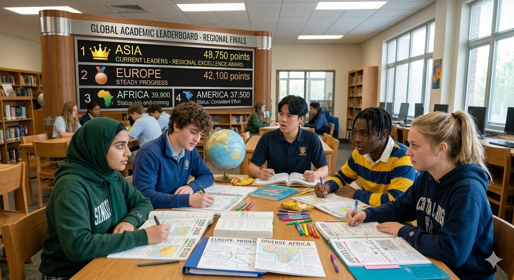
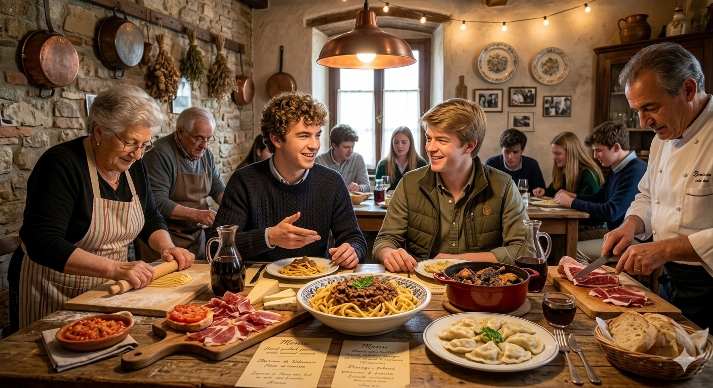

Alex Rivera
Senior Prom King Nominee
Class of 2026
Student body president, community volunteer, and captain of the debate team. Known for leading fundraising drives and school spirit initiatives.
Celebrating this year's nominees and outstanding student leaders.

Student body president, community volunteer, and captain of the debate team. Known for leading fundraising drives and school spirit initiatives.
Varsity athlete and peer tutor who organized a mentorship program for underclassmen. Praised for inclusivity and teamwork.

Lead in the arts program and founder of the school's mental-health awareness club. Recognized for kindness and creative leadership.

Top scholar and president of the science club. Organized community STEM outreach and promotes academic mentorship.